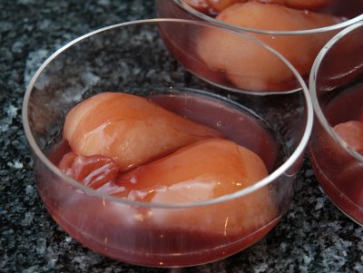

| Zutaten für 4 Personen: | |
| 500 g = 4 | Birnen |
| 1/4 l | Rotwein |
| 1/2 | Zimtstengel |
| 2 TL | Assugrin |
| 3 | Stückchen Ingwer, kandiert |
| 1 TL | Maispuder |
| 1 EL | Pistazien |
Zubereitungszeit: 10 Minuten
Kochzeit: 10 Minuten
Kühlzeit: 10 Minuten
Birnen schälen, halbieren, entkernen.
Mit Rotwein, Zimtstengel und Assugrin knapp weiter kochen.
Ingwer hacken und zufügen. Die Birnen im Wein abkühlen lassen.
Die Birnen mit der Wölbung nach oben in schöne Schalen legen.
Maispuder im erkalteten Wein gut verrühren. Nochmals aufkochen, bis der Wein leicht sämig ist. Nochmals etwas abkühlen lassen und über die Birnen giessen.
Nach Belieben mit gehackten Pistazien bestreuen. Die Pistazien zum Schälen kurz mit kochendem Wasser überbrühen, dann die braunen Häutchen entfernen.
Pro Person: 97 Kalorien, 406 Joules
Herbert Eigenmann, Code: BII
Ergibt eine sehr schmackhaftes Dessert. Besonders schöne Zimt und Ingwernote. Mit dem Assugrin ist das vermutlich auch sehr leicht. RE 20.4.2009
@LINKBACK_TAG@ @WAKELOCK@